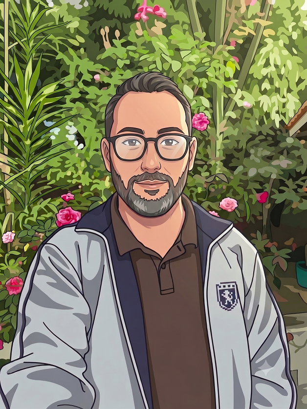

Projeto 1: Site com teoria e Calculadora Web
Uma calculadora feita com HTML, CSS e JavaScript básico.
Física - Eletricidade GeralPara testar, use qualquer nome e e-mail.

"A tecnologia move o mundo, e a programação está comigo desde a juventude. A considero a engrenagem principal."
Olá! Sou estudante de Análise e Desenvolvimento de Sistemas na UniCesumar. Meu desejo de iniciar ADS veio de uma necessidade real: criar meios inovadores para minhas aulas no Ensino Médio.
Eu precisava inovar. A inspiração surgiu quando decidi parar de enviar PDFs pesados pelo WhatsApp, que ocupavam muita memória dos celulares. Ao converter minhas aulas para HTML, vi que os alunos não apenas gostaram, como passaram a interagir mais.
Com o tempo, desenvolvi jogos interativos e apliquei técnicas de gamificação. Foi um sucesso! Os alunos aprenderam de forma inovadora, o que me motivou a oficializar essas ferramentas e ingressar na faculdade de ADS.
⬆ Voltar ao topoUma calculadora feita com HTML, CSS e JavaScript básico.
Física - Eletricidade GeralPara testar, use qualquer nome e e-mail.
Gosto de criar páginas de atividades didáticas para meus alunos do Ensino Médio.
Jogo da TrigonometriaPara testar, use qualquer nome ou deixe os já previamente preenchidos.